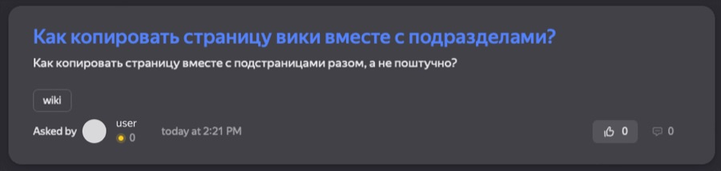
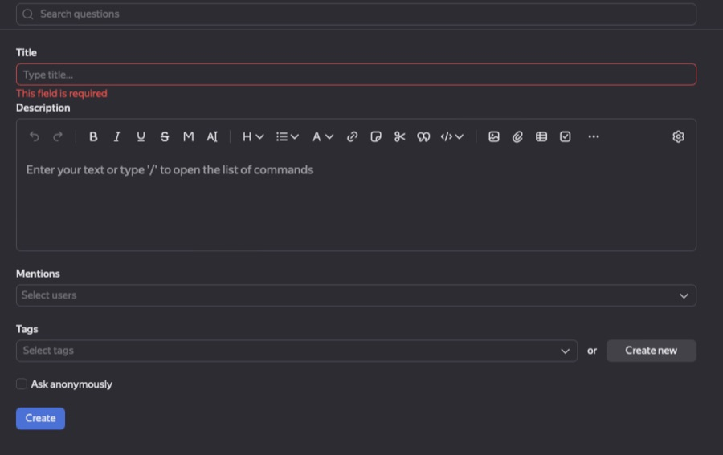
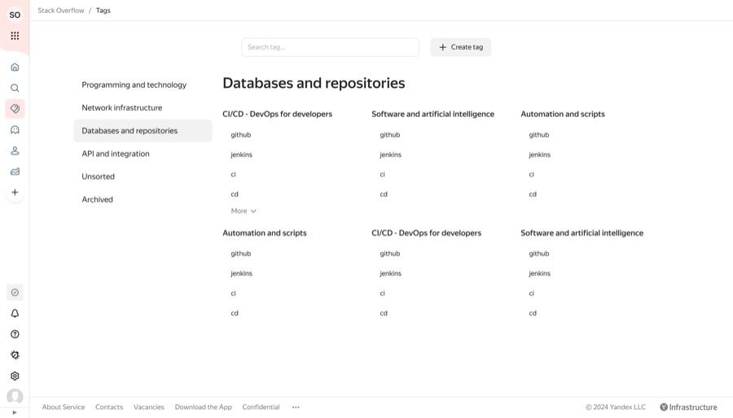
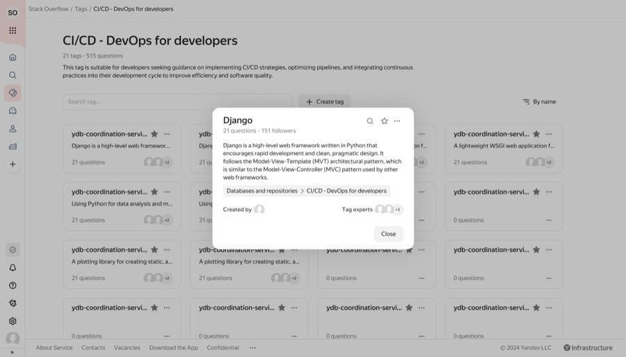
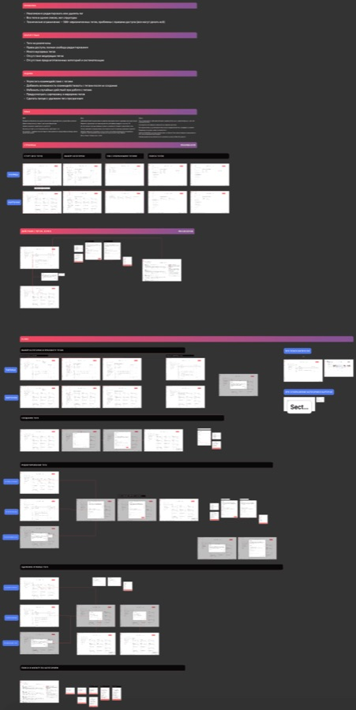

Yandex Ask & Learn
Yandex Ask & Learn — платформа для программистов и разработчиков, где ищут ответы на технические вопросы. В редизайне я сделал интерфейс современнее и понятнее, а заодно разобрался с проблемами старой версии, которые мешали людям находить ответы и участвовать в обсуждениях.
The problem
В старом интерфейсе почти не было механик, рассчитанных на людей и общение между ними. Без социальных функций и рекомендаций пользователям было сложно следить за интересными темами. Новички подолгу ждали ответов, а опытные специалисты не видели причин подключаться к нужным обсуждениям.
Тег-система тоже мешала работе: теги нельзя было редактировать, объединять и сортировать. Из-за этого контент было трудно упорядочивать и находить.
Before


Jobs to be done
- Быстро найти решение или ответ
- Когда возникает проблема или вопрос, хочется сразу найти готовый ответ. Если его нет — задать свой вопрос.
- Поделиться опытом, который пригодится другим
- Опытные коллеги делятся знаниями, чтобы получить статус «надёжного источника», укрепить репутацию и стать заметнее в сообществе.
- Найти проверенное решение
- Пользователю нужен ответ из надёжного источника: так он быстрее решит задачу и не потратит время на чужие ошибки.
- Разобраться в теме вместе с более опытными коллегами
- Иногда одного ответа мало. Пользователю важно понять контекст задачи и узнать, как на неё смотрят коллеги с другим опытом.
- Внести вклад, который учтут на ревью
- Ответы на вопросы помогают коллегам и заодно показывают экспертизу автора — этот вклад можно учесть на следующем ревью.
Hypotheses
- Поиск
- Если ответ легко найти через фильтры и сортировку по дате или числу голосов, пользователи будут чаще возвращаться на платформу.
- Признание
- Награды за ответы — бейджи, теги, рейтинг или деньги — дают понятную причину чаще помогать другим.
- «Надёжный источник»
- Метки «Лучший ответ» и «Сотрудник сервиса», рейтинг и голоса участников показывают, каким ответам можно доверять. Так пользователю проще выбрать решение и вернуться на платформу в следующий раз.
- Вовлечение новичков
- Онбординг, понятное объяснение рейтинга и короткие подсказки помогают новичкам быстрее освоиться и начать пользоваться платформой.
The rebuilt tag system
Теги получили категории, поиск, сортировку и понятные действия — создание, редактирование, объединение и удаление. Контент стало проще упорядочивать и находить.


Question card
- Вопрос, метаданные и счётчики получили ясную иерархию — карточку проще просмотреть по диагонали.
- Репутация, роли и теги с подсказками дают контекст ещё до перехода в обсуждение.
- При наведении тег раскрывает краткую справку по теме, поэтому интересующий контент легче оценить сразу.
- Лайки, комментарии и просмотры вынесены на видное место: заметно, какие обсуждения уже заинтересовали коллег.
- Больше воздуха и аккуратная типографика упростили чтение.
- Карточка собрана из модульных компонентов Gravity UI, поэтому её легко развивать вместе с остальным сервисом.
- Метка «изменено» показывает, насколько свежий материал перед пользователем.
Question page
Принятый ответ поднят к вопросу и обведён рамкой: читателю не нужно проходить весь тред, чтобы найти решение. Остальные ответы идут ниже, во вложенных ветках, чтобы обсуждение не терялось, но и не спорило с ответом за внимание.
Реакции сильнее простого плюса: несколько эмодзи дают увидеть, чем ответ оказался полезен. Автор, репутация и роль стоят у каждого сообщения — это и есть та самая метка «надёжного источника» из гипотез, только не отдельным элементом, а частью каждой реплики. Справа — блок Related: похожие вопросы, темы и статьи вики, чтобы страница отвечала и тем, кто пришёл не совсем с тем же вопросом.
Отдельная строка связывает вопрос с задачей в трекере и показывает её статус. Так техническое обсуждение остаётся привязанным к работе, из которой оно выросло.

Creating a question
- Поля выстроены по важности, поэтому форма ведёт пользователя от заголовка к публикации.
- Теги и упоминания разделены и подписаны: сразу понятно, что и где добавлять.
- Единые отступы, типографика и выравнивание сделали форму спокойнее и проще для чтения.
- Лимит тегов 0/5 и понятные кнопки подсказывают следующий шаг по ходу заполнения.
- Аккуратный интерфейс без визуального шума помогает сосредоточиться на самом вопросе.
Process

Selected screens from the desktop redesign. The mobile version was built from scratch and is not shown here.